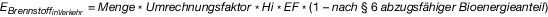
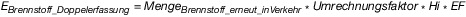

EBeV 2022
Ausfertigungsdatum: 17.12.2020
Vollzitat:
"Emissionsberichterstattungsverordnung 2022 vom 17. Dezember 2020 (BGBl. I S. 3016), die durch Artikel 2 der Verordnung vom 20. Februar 2023 (BGBl. 2023 I Nr. 47) geändert worden ist"
| Hinweis: | Geändert durch Art. 2 V v. 20.2.2023 I Nr. 47 |
(+++ Textnachweis ab: 24.12.2020 +++)
| § 1 | Anwendungsbereich und Zweck |
| § 2 | Begriffsbestimmungen |
| § 3 | Entbehrlichkeit des Überwachungsplans |
| § 4 | Allgemeine Grundsätze |
| § 5 | Ermittlung von Brennstoffemissionen |
| § 6 | Berücksichtigung des Bioenergieanteils bei der Ermittlung der Brennstoffemissionen |
| § 7 | Berichterstattung |
| § 8 | Berichterstattungsgrenze |
| § 9 | Aufbewahrung von Unterlagen und Daten |
| § 10 | Vermeidung von Doppelerfassungen nach § 7 Absatz 4 Nummer 5 des Brennstoffemissionshandelsgesetzes |
| § 11 | Vermeidung von Doppelbelastungen nach § 7 Absatz 5 des Brennstoffemissionshandelsgesetzes |
| § 12 | Inkrafttreten |
| Anlage 1 (zu den §§ 5, 6, 10 und 11) | Ermittlung der Brennstoffemissionen |
| Anlage 2 (zu den §§ 6, 7, 10 und 11) | Mindestinhalt eines jährlichen Emissionsberichts |
| Anlage 3 (zu § 11) | Erforderliche Erklärungen, Angaben und Nachweise des belieferten Unternehmens im Zusammenhang mit dem Abzug von Brennstoffemissionen bei der Lieferung von Brennstoffen zum Einsatz in einer dem EU-Emissionshandel unterliegenden Anlage |
 |
| EBrennstoff_BEHG | die Gesamtmenge der Brennstoffemissionen nach Abzug der nach den §§ 10 und 11 abzugsfähigen Brennstoffemissionen; |
| EBrennstoff_inVerkehr ,k | die Menge der auf einen in Verkehr gebrachten Brennstoff (k) entfallenden Brennstoffemissionen; |
| EBrennstoff_Doppelerfassung ,k | die nach § 10 abzugsfähige Menge an Brennstoffemissionen eines in Verkehr gebrachten Brennstoffs (k); |
| EBrennstoff_Doppelbelastung ,k | die nach § 11 abzugsfähige Menge an Brennstoffemissionen eines in Verkehr gebrachten Brennstoffs (k). |
|  |
| Menge | die nach § 5 Absatz 2 ermittelte Brennstoffmenge. |
|  |
| MengeBrennstoff_erneut_in_Verkehr | die nach § 5 Absatz 2 und § 10 ermittelte Brennstoffmenge. |
| MengeBrennstoff_EU-ETSi | die im Kalenderjahr zum Einsatz in einer dem EU-Emissionshandel unterliegenden Anlage (i) gelieferte Brennstoffmenge; |
| BiomasseanteilEU-ETSi | der in der dem EU-Emissionshandel unterliegenden Anlage (i) anerkannte Biomasseanteil. |
| Nummer | Brennstoff | Nomenklatur | Umrechnungsfaktor | Heizwert | Heizwertbezogener Emissionsfaktor | |
|---|---|---|---|---|---|---|
| 1 | Benzin ohne E 85 | 2710 12 41, 2710 12 45, 2710 12 49, 2710 12 50 | Dichte: 0,755 t/1000 l | 43,5 GJ/t | 0,0731 t CO2/GJ | |
| 2 | Flugbenzin | 2710 12 31 | Dichte: 0,72 t/1000 l | 44,3 GJ/t | 0,070 t CO2/GJ | |
| 3 | Gasöl | |||||
| 3a | Gasöl als Kraftstoff (Diesel) | 2710 19 43 bis 2710 19 48, 2710 20 11 bis 2710 20 19 | Dichte: 0,845 t/1000 l | 42,8 GJ/t | 0,074 t CO2/GJ | |
| 3b | Gasöl zu Heizzwecken (Heizöl EL) | 2710 19 43 bis 2710 19 48, 2710 20 11 bis 2710 20 19 | Dichte: 0,845 t/1000 l | 42,8 GJ/t | 0,074 t CO2/GJ | |
| 4 | Heizöl | |||||
| 4a | Heizöl als Kraftstoff (Heizöl S) | 2710 19 62 bis 2710 19 68, 2710 20 31 bis 2710 20 39 | 1 t/t | 39,5 GJ/t | 0,0799 t CO2/GJ | |
| 4b | Heizöl zu Heizzwecken(Heizöl S) | 2710 19 62 bis 2710 19 68, 2710 20 31 bis 2710 20 39 | 1 t/t | 39,5 GJ/t | 0,0799 t CO2/GJ | |
| 5 | Flüssiggas | |||||
| 5a | Flüssiggas als Kraftstoff | 2711 12, 2711 13, 2711 14, 2711 19 | 1 t/t | 45,7 GJ/t | 0,0663 t CO2/GJ | |
| 5b | Flüssiggas zu Heizzwecken | 2711 12, 2711 13, 2711 14, 2711 19 | 1 t/t | 45,7 GJ/t | 0,0663 t CO2/GJ | |
| 6 | Erdgas | 2711 11, 2711 21 | 3,2508 GJ/MWh | 1 GJ/GJ | 0,056 t CO2/GJ | |